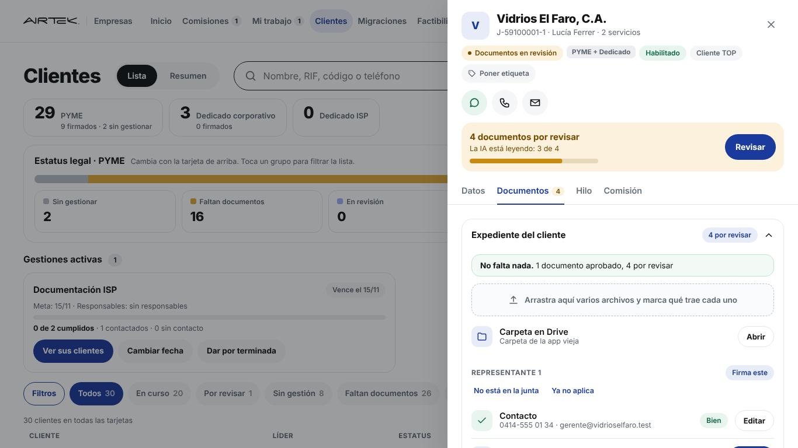
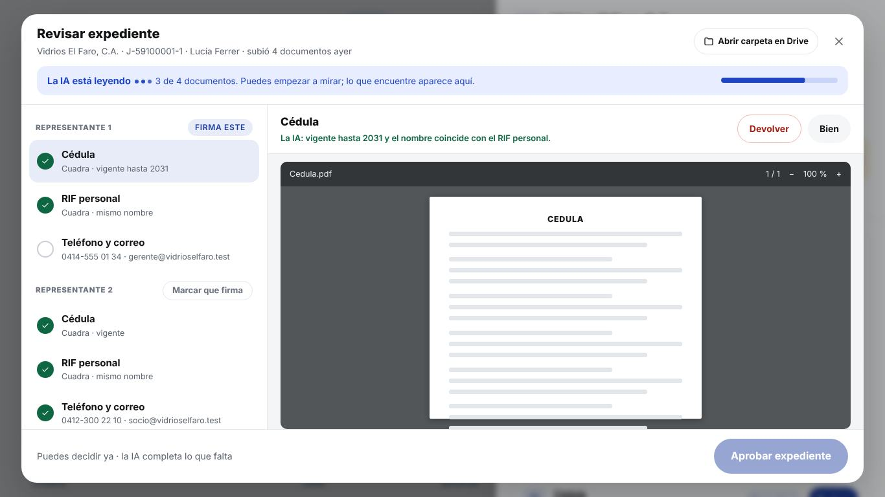
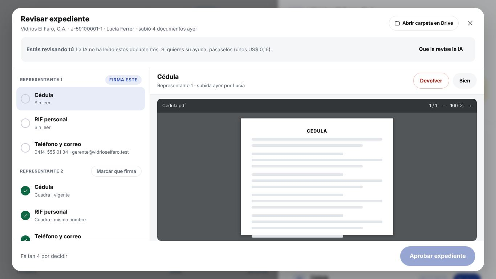
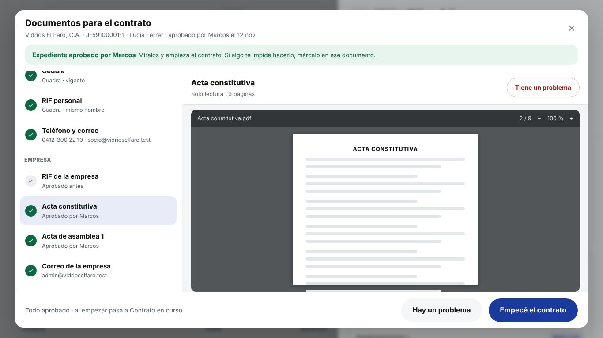
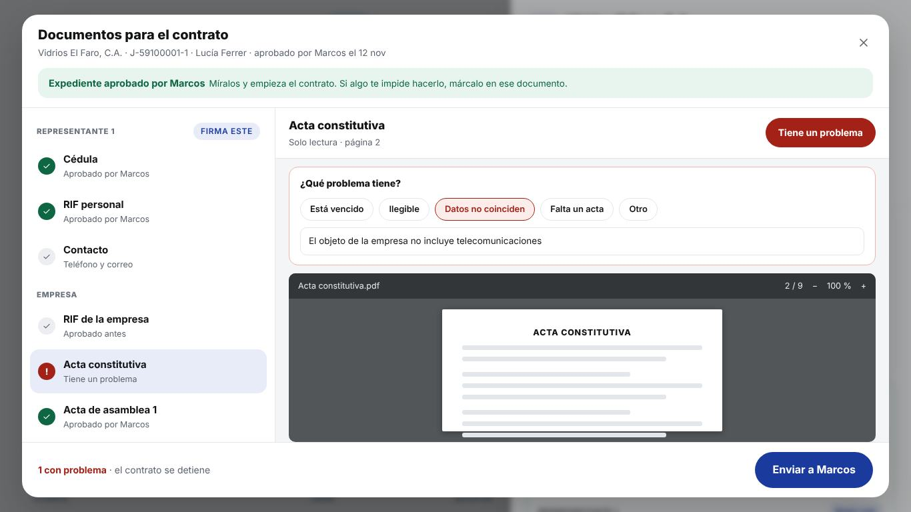

Un botón, una pantalla, un cierre, y con aire
Capturas de la app de hoy (simulador, datos de prueba) con los cambios encima. La pantalla de revisión ocupa casi todo el monitor: lista a la izquierda, documento grande a la derecha y las decisiones arriba del documento.
La IA arranca sola cuando el líder termina de subir. El avance se ve en la banda de la ficha ("La IA está leyendo: 3 de 4") y en la franja de arriba de la revisión, con la barra y los puntos moviéndose. Si la IA está apagada o falló, la franja trae Leer con IA con su costo.
No con seguridad. La IA dice en qué página está cada cosa, pero no la posición exacta dentro de la página, así que un recuadro saldría corrido. Lo que sí se puede: abrir el documento en esa página y poner su nota arriba. Por eso quité el recuadro.
Sí, sin costo: el visor de PDF del navegador ya trae páginas y zoom, y abre directo en la página que diga la IA (por ejemplo la 6). Es el mismo visor que hoy usa la app.
Hoy cada archivo se baja de Drive cuando lo abres. La propuesta baja el siguiente documento mientras miras el actual, así al tocar "Bien" el próximo ya está listo. Un acta muy pesada tarda lo mismo que hoy la primera vez; el resto se siente inmediato.
Lo quité de la revisión. La carpeta sigue en la ficha (casilla "Carpeta en Drive"), y en el visor queda Abrir archivo por si quieres verlo aparte.
No revisa: mira. Su botón principal abre los documentos en solo lectura y ahí mismo decide: Empecé el contrato o Hay un problema.
De la ficha al expediente aprobado

La ficha mientras la IA lee
La IA arranca sola cuando el líder sube. En la banda se ve "La IA está leyendo: 3 de 4" con su barra. Puedes tocar Revisar sin esperar.

La ficha cuando la IA terminó
La banda dice qué encontró: "3 cuadran y 1 tiene algo que mirar". Un solo botón Revisar. Todo lo demás de la ficha queda igual.
Toca: Revisar

Revisar: con aire y el documento grande
Arriba, una sola franja con lo que encontró la IA. Izquierda, la lista (solo el nombre y un punto de color). Derecha, el documento seleccionado: su nota de la IA en una línea, Devolver y Bien arriba, el visor de PDF de siempre abierto en la página 6, y abajo fecha del acta, también trae y Reemplazar archivo.
Toca: Devolver o Bien

Devolver: el motivo arriba del documento
Los motivos salen en el panel derecho, no apretados en la lista. La lista solo cambia el punto a rojo.
Toca: el motivo

Un solo cierre con el mensaje
Qué se aprueba, qué se devuelve, estatus y mensaje editable.
Toca: Guardar y enviar por WhatsApp

Si todo cuadra
Los documentos vienen en verde. Aprobar expediente.
Toca: Aprobar expediente

Legal aprobado de una vez
El cliente pasa a Documentos recibidos y le aparece a la abogada.
Toca: Siguiente cliente

Si abres mientras la IA lee
La franja azul con los puntos moviéndose y la barra. Lo ya leído tiene su nota; lo demás dice "Leyendo…".

Si la IA no leyó (apagada o falló)
Franja gris con el botón Leer con IA y el costo. Puedes revisar igual sin ella.
Toca: Leer con IA
Mira los documentos y ahí mismo decide

Abogada: su ficha
Tu paso con los 4 estatus y un botón principal: Ver documentos y empezar.
Toca: Ver documentos y empezar

Abogada: mira los documentos y decide ahí
La misma pantalla, en solo lectura. Abajo sus dos botones: Empecé el contrato y Hay un problema (para lo que no es de un documento: pedir otro o solo avisar). En cada documento, Tiene un problema.
Toca: Empecé el contrato

Abogada: marca el problema
Elige el motivo arriba del documento y toca Enviar a Marcos. El contrato se detiene y te llega a ti.
Toca: Enviar a Marcos